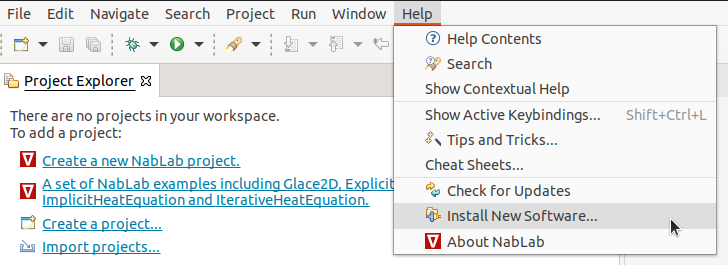
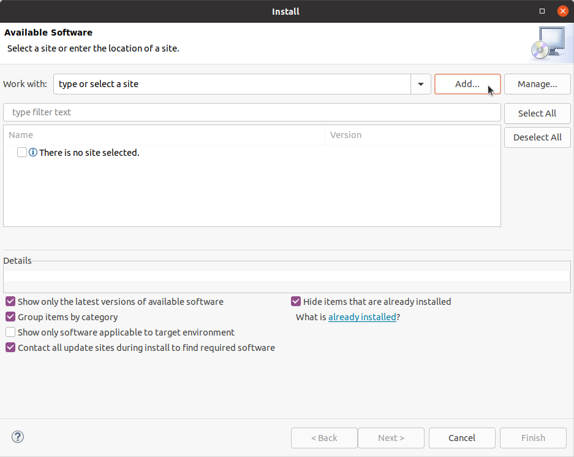
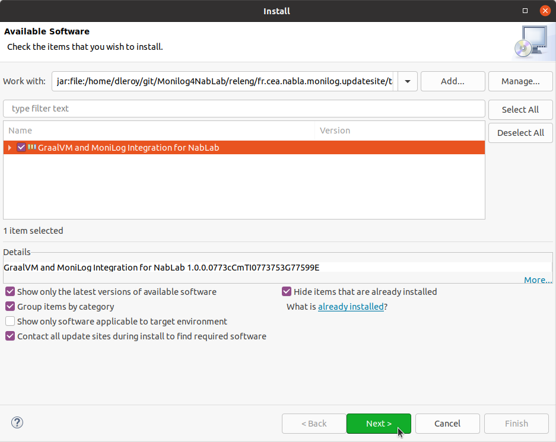
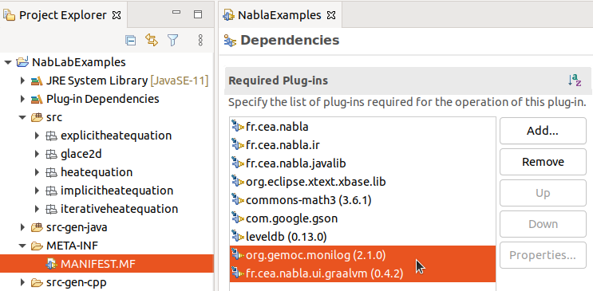

Monitoring and debugging
NabLab debugger is part of the Debug4Science project.


The NabLab debugger relies on MoniLog, a language to define monitors, loggers, and a mix of both called moniloggers.
Installing and configuring MoniLog in NabLab
Installation
To install MoniLog in your NabLab IDE, go to the Help > Install New Software menu.

Then, clik on the Add button.

In the newly opened dialog select Archive and provide the .zip file available here. Tick the box and click Next, then click Finish.

You will be prompted twice to Install anyway. NabLab will then download the required version of GraalVM if it has not yet been installed (this can take a few minutes). Once the installation is complete, NabLab will prompt you to Restart now. If GraalVM was downloaded as part of the installation, do not accept, and instead restart the IDE by hand.
If you wish to call Python code from moniloggers, navigate to the root folder of your NabLab IDE in the terminal, and run the following commands to install Python, create and activate a virtual environment, and install numpy and pandas there (this last step can take a dozen of minutes):
./graalvm-ce-java11-21.1.0/bin/gu install python
./graalvm-ce-java11-21.1.0/bin/graalpython -m venv nablab-venv
cd nablab-venv
source bin/activate
graalpython -m ginstall install pandas
You are now able to use MoniLog to define moniloggers for NabLab.
Configuration
To enable MoniLog for a NabLab project, add the following dependencies to your MANIFEST.MF located in the META-INF folder of the project:
org.gemoc.monilog,
fr.cea.nabla.ui.graalvm

Next, before you can define moniloggers, you need to generate the instrumentation interface of the NabLab application you wish to debug. To do this, right-click the .ngen file of your application, and click on Generate Instrumentation Interface.
You can now create MoniLog (.mnlg) files in your workspace.
Syntax
Imports
The MoniLog language allows to import other MoniLog packages so that the entities declared within can be used, including the org.gemoc.monilog.stl package, which contains some basic layouts and appenders.
The language also allows to import files from other languages (such as Python) under an alias to be able to call the functions defined within.
import org.gemoc.monilog.stl.*
import fr.cea.nabla.monilog.nablalib.*
import "$MONILOG_HOME/monilog-libraries/utils.py" as utils
import IterativeHeatEquation.*
This snippet imports the aforementionned standard library of MoniLog, as well as a NabLab-specific library allowing to print to the NabLab console.
It also imports a Python file to be used later, and the IterativeHeatEquation NabLab module, to de able to refer to the variables, jobs and functions defined in your NabLab application.
Note that $MONILOG_HOME refers to an environment variable which must be defined and point to the folder containing utils.py.
Setup
A MoniLog specification file can contain a setup block after the imports, allowing to declare global variables that can be used by moniloggers.
The following specification defines 3 variables, the last one being assigned a string including the current date through a StringLayout and a call to a function defined in utils.py.
setup {
lastDump = 0.0;
outputInterval = 0.001;
filePath = StringLayout.call("$MONILOG_HOME/NabLabExamples/iterativeheatequation_{0}.csv", python(utils.date()));
}
Events
Events are declared using the following syntax:
event Initialized {
after call InitU
}
event BeforeComputeTn {
before call ComputeTn
}
event AfterWriteResidual {
after write residual
}
This snippet declares three events, Initialized, BeforeComputeTn and AfterWriteResidual, to which moniloggers can listen during the execution.
These events are respectively fired after calls to InitU, before calls to ComputeTn, and after any value is assigned to residual.
Expressions
The other entities (namely, layouts and appenders) make use of expressions, which can be MoniLog expressions or language expressions.
In MoniLog expressions, references to variables of the context of the instrumented program can be done through the context operator, such as context(x) * 2, sizeOf(context(u_nplus1)), or context(u_nplus1)[0].
Language expressions are calls to functions defined in imported files, such as python(utils.stdev(context(u_n)).
Any language available on your GraalVM installation can be used by specifying the language id instead of python in the examples.
MoniLog also offers some native support for expressions, providing the following operators, in order of priority:
| Name | Syntax |
|---|---|
| Ternary Operator | <condition> ? <result if **true**> : <result if **false**> |
| Or | || |
| And | && |
| Equality, Inequality | ==, != |
| Plus, Subtract | +, - |
| Multiplication, Division | *, / |
| Modulo | % |
| Parenthesis, Minus, Negation | (<expression>), -<expression>, !<expression> |
Finally, array and field access are respectively written as someArray[someIndice] and someObject.someField.
Both of these kinds of access can be chained, e.g., someObject.arrayField[0].anotherField.
Layouts
The StringLayout allows to insert the result values of any MoniLog expression or language call into a string template.
The first parameter of a call to StringLayout is the pattern of the message, where curly braces such as {0,number,0.000000} indicate where the subsequent parameters should be inserted in the message, and how they should be formatted, according to the semantics of MessageFormat.
Consequently, the following parameters are expressions retrieving and computing the actual values to insert in the message.
Note
Scientific formating can be achieved using {0,number,0.000000E0}.
The following snippet shows how to use the StringLayout to format a message displaying the standard deviation of the u_n array (obtained from a language call) at each time step of the simulation:
StringLayout.call("[t={0,number,0.00000}] Temperature Standard Deviation: {1,number,0.000000E0}",
context(t_n), python(utils.stdev(context(u_n))))
Moniloggers
Moniloggers are defined according to one of these templates:
when <event> {
<actions>
}
when <event>
if (<condition>)
then {
<actions>
}
when <event>
if (<condition>)
then {
<actions>
} else {
<actions>
}
Conditions
Conditions are expressions written in the native MoniLog expression language, or a language available on your GraalVM installation, whose result are interpreted as a boolean (i.e., any value different than 0 is considered as true).
Conditions can be used to determine whether a particular event should trigger the actions of a monilogger, according to the current state of the program under execution.
Optionally, a different set of actions can be triggered when the condition evaluates to false, using an else block after the then block (see above).
In the following monilogger, a condition specifies that actions should only be triggered if the sum of MoniLog variables lastDump and outputInterval are lesser than or equal to the NabLab variable t_n.
monilogger LogTemperature {
when ComputeTnReturned
if (lastDump + outputInterval <= context(t_n))
then {
...
}
}
Actions
Two types of actions are available to moniloggers: calling appenders and assigning values.
Two appenders are provided as part of the MoniLog standard library: ConsoleAppender and FileAppender.
An additional appender is provided by the MoniLog4NabLab extension: the NabLabConsoleAppender allowing to print to NabLab's console.
Printing to the console
The NabLabConsoleAppender allows to print text to the NabLab console.
The following monilogger uses the NabLabConsoleAppender and the StringLayout to print to the console the current value of the residual variable, along with the current values of n and k.
monilogger PrintResidual {
when ResidualUpdated {
NabLabConsoleAppender.call(
StringLayout.call("[n={0,number,000}, k={1,number,00}] current residual: {2,number,0.0E0}",
context(n), context(k), context(residual)));
}
Printing to a file
The FileAppender allows to print text to a file.
The following monilogger prints the current value of t_n along with the values of u_n, formatted in CSV format using a Python function, to a file located at the path indicated by filePath (computed as part of the setup block of the specification).
monilogger LogTemperature {
when UpdateUReturned {
FileAppender.call(StringLayout.call("{0,number,0.00000}, {1}", context(t_nplus1), python(utils.format(context(u_n)))), filePath);
}
}
Assigning values
The following monilogger adds an interval between each write to file, controled by the outputInterval variable.
The lastDump variable is then incremented by the value of outputInterval.
monilogger LogTemperature {
when ComputeTnReturned
if (lastDump + outputInterval <= context(t_n))
then {
FileAppender.call(StringLayout.call("{0,number,0.00000}, {1}", context(t_n), python(utils.format(context(u_n)))), filePath);
lastDump = lastDump + outputInterval
}
}
Complete examples
The following specification allows to monitor whether the residual variable is updated as expected, and logs error messages with current and previous residual values when that is not the case.
package iterativeHeatEquation
import org.gemoc.monilog.stl.*
import fr.cea.nabla.monilog.nablalib.*
import IterativeHeatEquation.*
setup {
prevResidual = 1.0;
}
event ComputeTnReturned {
after call ComputeTn
}
event ResidualUpdated {
after call ComputeResidual
}
monilogger correctResidual {
when ResidualUpdated
if (context(residual) > prevResidual)
then {
NabLabConsoleAppender.call(
StringLayout.call("[n={0,number,000}, k={1,number,00}] current residual: {2,number,0.0E0}, previous residual: {3,number,0.0E0}",
context(n), context(k), context(residual), prevResidual));
prevResidual = context(residual);
} else {
prevResidual = context(residual);
}
}
monilogger resetResidual {
when ComputeTnReturned
{
prevResidual = 1.0;
}
}
The following specification allows to log to file the values of u_n at faster interval in the beginning of the execution than toward the end.
Results are written to a file named iterativeheatequation_<date-of-execution>.csv (Python file provided below).
package iterativeHeatEquation
import org.gemoc.monilog.stl.*
import fr.cea.nabla.monilog.nablalib.*
import IterativeHeatEquation.*
import "$MONILOG_HOME/monilog-libraries/utils.py" as utils
setup {
lastDump = 0.0;
outputInterval = 0.00025;
filePath = StringLayout.call("$MONILOG_HOME/NabLabExamples/iterativeheatequation_{0}.csv", python(utils.date()));
}
event ComputeTnReturned {
after call ComputeTn
}
monilogger LogTemperature {
when ComputeTnReturned
if (lastDump + outputInterval <= context(t_n))
then {
FileAppender.call(StringLayout.call("{0,number,0.00000}, {1}", context(t_n), python(utils.format(context(u_n)))), filePath);
lastDump = lastDump + outputInterval
}
}
monilogger IncreaseInterval {
when ComputeTnReturned
if (context(t_nplus1) >= 0.01)
then {
outputInterval = 0.01;
}
}
from datetime import datetime
def date():
now = datetime.now()
return now.strftime("%m-%d-%Y_%H:%M:%S")
def format(a):
return str(a)[1:-1]